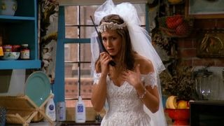

ENTRAR
ASSINE AGORA
Friends

Aproveite o máximo de entretenimento
ASSINE AGORA
Uma das séries de maior sucesso da TV e com várias indicações aos prêmios Emmy e Globo de Ouro, ""Friends"" é uma comédia inteligente e divertida sobre a vida e os sentimentos de um grupo de amigos que mora em Nova York. Da Bright/Kauffman/Crane Productions.
Estrelando: Jennifer Aniston, Courteney Cox, Lisa Kudrow, Matt LeBlanc, Matthew Perry, David Schwimmer, Courteney Cox Arquette
Episódios
TEMPORADA 1

1. The One Where Monica Gets a Roommate
Depois que Rachel abandona o noivo no altar, ela vai morar com Monica e descobre que não é fácil ser independente, principalmente quando não pode contar com o cartão de crédito do papai.
MENOS

2. Aquele da ultrassonografia
Ross não gosta do sobrenome que ex-esposa escolheu para o bebê. Rachel descobre que seu ex-noivo fez a viagem que teria sido a lua-de-mel na companhia da dama de honra dela.
MENOS

3. Aquele com o dedão
Uma companhia de refrigerantes dá 7.000 dólares à Phoebe quando ela encontra um dedo dentro de sua lata de refrigerantes. O que não a deixa nada feliz.
MENOS

4. Aquele com George Stephanopolous
Um entregador acidentalmente entrega uma pizza destinada a George Stephanopoulos, que mora do outro lado da rua, e as garotas decidem espionar de binóculos o ex-porta-voz da Casa Branca.
MENOS

5. Aquele com o detergente de roupas da Alemanha Orienta
Ross ajuda Rachel a lavar roupa e considera o evento um primeiro encontro. Joey faz Monica fingir ser sua nova namorada porque quer voltar a ficar com a garota que ele acabou de dispensar.
MENOS

6. Aquele com o bumbum6. Aquele com o bumbum
Joey ganha uma grande oportunidade no cinema quando é contratado para ser dublê do traseiro do Al Pacino. Joey ganha uma grande oportunidade no cinema quando é contratado para ser dublê do traseiro do Al Pacino.
MENOS

7. Aquele com o blecaute
Phoebe está prestes a cantar suas músicas deprimentes no Central Perk, quando acontece um apagão e os amigos voltam para o apartamento das garotas. Ross tenta contar a Rachel que gosta dela.
MENOS

8. Aquele onde Nana morre duas vezes
Monica e Ross estão de luto pela avó. Chandler questiona sua sexualidade.

9. Aquele em que o vira-latas escapou
O primeiro jantar de Ação de Graças de Mônica queima quando todos vão até o telhado para ver um globo que escapou do desfile.
MENOS

10. The One With The Monkey
O grupo faz e desfaz um pacto para comemorar o Ano Novo. Ross compensa sua solidão comprando um macaco capuchino e lhe dá o nome de Marcel.
MENOS

11. Aquele com a Sra. Bing
A mãe de Chandler, que é escritora de romances, vai a Nova Iorque para uma visita, e Joey a flagra beijando Ross.
MENOS

12. Aquele com a dúzia de lasanha
Monica dá a Paolo uma das doze lasanhas que ela fez para a tia, que não as quer mais porque são feitas de carne.

13. Aquele com os peitinhos
Chandler acidentalmente vê Rachel andando pelo apartamento sem roupa depois do banho, e ela tenta dar o troco.
MENOS

14. Aquele com as balas em forma de coração
No Dia dos Namorados, Ross e sua namorada acabam indo ao mesmo restaurante que Susan e Carol.
MENOS

15. Aquele com o cara doidão
Monica cozinha uma refeição gourmet para o dono de um restaurante à procura de um novo chef, mas infelizmente ele está chapado.
MENOS

16. Aquele com duas partes – Parte 1
Phoebe se sente ignorada quando Joey se interessa pela irmã gêmea dela. Durante as aulas de Lamaze com Carol e Susan, Ross fica inseguro com a ideia de ser pai.

17. Aquele com duas partes – Parte 2
Quando Rachel torce o tornozelo sem ter um plano de saúde, ela convence Monica a trocar de identidade com ela para poder usar os benefícios da amiga.
MENOS

18. Aquele com o poker
Rachel é entrevistada para concorrer a um cargo como assistente de compras na Saks Fifth Avenue. As mulheres encaram os homens em um jogo de pôquer não muito amigável.
MENOS

19. Aquele em que o macaco fugiu
Todos saem à procura de Marcel, que fugiu do apartamento enquanto Rachel cuidava dele. Rachel e Ross têm a chance de finalmente passar uma noite romântica juntos, mas Barry aparece.
MENOS

20. Aquele do ortodontista safado
Rachel e Barry voltam a ficar juntos, apesar de ele ainda estar noivo de Mindy, que quer que Rachel seja sua dama de honra.

21. Aquele com a Monica falsa
Quando o cartão de crédito de Monica é roubado, ela decide pegar o ladrão.

22. Aquele do caso esquisito
Depois de perder a virgindade com ela, o namorado de Monica revela que ainda está na escola. Phoebe trabalha temporariamente como secretária de Chandler.
MENOS

23. Aquele do nascimento
Carol entra em trabalho de parto enquanto Ross, Phoebe e Susan ficam presos em um armário.
MENOS

24. The One Where Rachel Finds Out
Durante a festa de aniversário de Rachel, Chandler deixa escapar que Ross está apaixonado por ela.
MENOS
Você pode se interessar